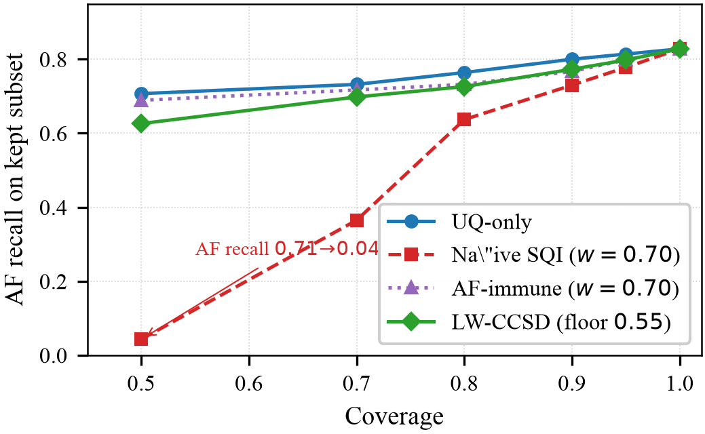
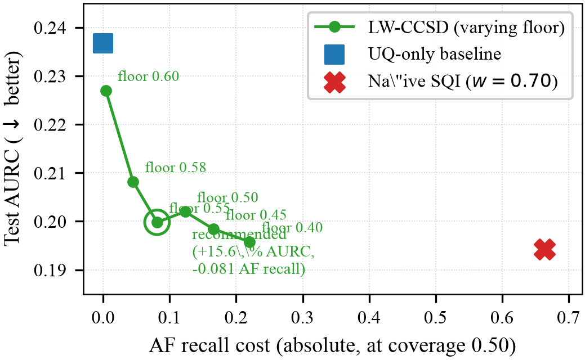
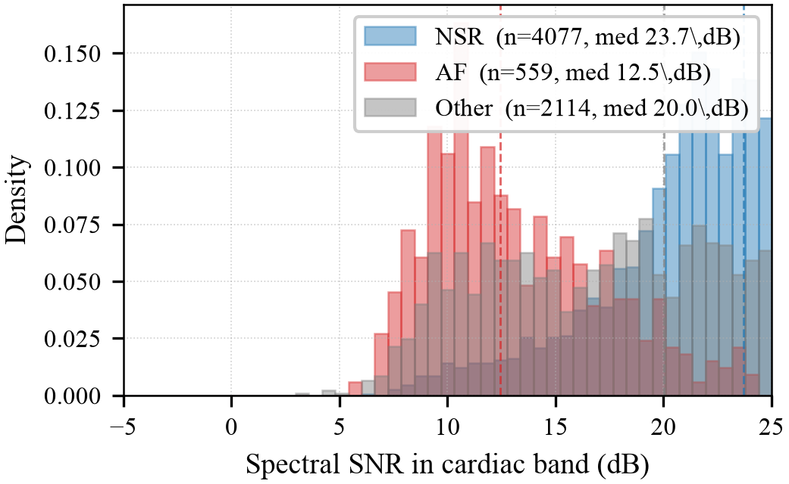

Contactless atrial fibrillation (AF) screening from facial-video remote photoplethysmography (rPPG) is an attractive opportunistic-screening modality, but deployment requires the model to abstain on segments it cannot classify safely. Standard selective-prediction methods rank samples by model confidence alone, ignoring the physical signal-quality information available from the rPPG pulse waveform itself. We study post-hoc deferral policies that combine model confidence with spectral signal-to-noise ratio (SNR) in the cardiac band. We first show that a naïve linear combination achieves an apparent 18 % relative improvement in area under the risk-coverage curve (AURC) over uncertainty-only deferral on a 45,064-segment synthetic-rPPG benchmark derived from the PhysioNet/CinC 2017 AF Challenge — but this aggregate gain is clinically harmful: AF recall at 50 % coverage collapses from 0.71 to 0.04 because AF’s irregular rhythm is itself a low-SNR signature in the cardiac band, so the deferral rule systematically rejects positives. We then introduce Learned Class-Conditional Signal-Quality Deferral (LW-CCSD), a constrained-grid-search procedure that estimates per-predicted-class quality weights on validation data subject to a configurable AF-recall floor. LW-CCSD makes the safety / accuracy trade-off explicit and tunable: across the Pareto frontier we measure +4.1 % AURC improvement at ≤ 0.01 AF-recall cost, scaling to +15.6 % AURC at 8 percentage-point AF cost. The method generalises across three uncertainty quantification methods (deterministic single-pass softmax, MC Dropout, deep ensembles), and a Clopper–Pearson conformal extension provides finite-sample distribution-free coverage guarantees on test recall with essentially zero operational penalty (identical operating points at 90 % confidence; 0.6 % relative AURC cost at 95 % confidence). Strikingly, LW-CCSD applied to a single-forward-pass classifier achieves better selective performance than a five-model deep ensemble without LW-CCSD, suggesting the method can substitute for compute-expensive ensembling in deployed clinical screens.
Index terms— Remote photoplethysmography (rPPG), atrial fibrillation, selective prediction, uncertainty quantification, conformal prediction, calibration, contactless cardiac screening, signal quality, deferral policies.
Atrial fibrillation (AF) is the most common sustained cardiac arrhythmia and a major risk factor for stroke. It is frequently asymptomatic and paroxysmal, so opportunistic screening outside clinical settings has high public-health value. Remote photoplethysmography (rPPG), which recovers a pulse waveform from skin-colour variation in face video, has emerged as a promising contactless modality. Recent studies report high accuracy for rPPG-based AF detection. However, none report risk-coverage curves, calibration error, or principled deferral policies. rPPG signal quality varies sharply with motion, lighting, skin tone, frame rate, and camera quality, so a confident prediction on a low-quality signal is not deployable.
This work formalises rPPG-based AF screening as a selective-prediction problem: a system that defers cases it cannot classify safely. We make three contributions:
A deployment-relevant corollary: LW-CCSD applied to a single-pass deterministic classifier outperforms an unaugmented 5-model deep ensemble. Lightweight inference plus the free post-hoc deferral rule can replace compute-expensive ensembling.
Remote photoplethysmography (rPPG) recovers the cardiac pulse waveform from periodic colour modulations of facial skin in standard RGB video. Classical extractors — CHROM [1] and POS [2] — combine the colour channels by a fixed projection designed to suppress motion-correlated noise. Learned end-to-end extractors — PhysNet [3] and successors — replace this projection with a CNN trained on paired video / contact-PPG corpora and substantially close the gap to clinical-grade sensors under cooperative conditions.
AF detection from rPPG has been demonstrated on dedicated corpora. The OBF database [4] contains 200 subjects, of whom 100 are paroxysmal AF patients recorded both pre- and post-cardioversion; this remains the standard benchmark for face-video AF screening but is gated and not in general circulation. Yan et al. [5] reported high accuracy for an AF screening pipeline using consumer-grade smartphone cameras on 217 hospitalised subjects. Reported metrics in both lines of work are dominated by point accuracy and ROC-AUC; we are not aware of any rPPG-AF study that publishes risk-coverage curves, calibration error, or principled deferral policies on inputs that are ambiguous due to motion, occlusion, or low signal quality. This omission is the gap the present work addresses.
Uncertainty quantification (UQ) in deep neural networks for medical imaging and physiology has converged on a small set of practical methods. Monte-Carlo Dropout [6] treats inference-time dropout as approximate variational inference over the weight posterior, yielding predictive uncertainty at the cost of T stochastic forward passes. Deep Ensembles [7] aggregate M independently trained models and remain competitive with more elaborate Bayesian approaches in calibration and out-of-distribution detection. Evidential Deep Learning [8] reframes classification as inferring the parameters of a Dirichlet over the simplex, separating data uncertainty from epistemic uncertainty in a single forward pass. SNGP [9] achieves distance-aware uncertainty by combining a spectrally-normalised feature extractor with a Gaussian-process classifier head. Split conformal prediction [10] provides distribution-free finite-sample coverage guarantees by calibrating a non-conformity threshold on a held-out set.
Selective classification [11] couples a base classifier with an abstention head, traded off against a target coverage. Calibration is typically reported via the Expected Calibration Error [12] or the Brier score. None of these methods individually incorporate physical signal-quality information, which is the augmentation we study here.
In the PPG and rPPG literature, signal-quality indices (SQIs) are conventionally used as a hard gate: segments with SQI below a threshold are dropped before classification, and only the remainder is scored. This approach has two limitations. First, it conflates “too low to use” with “low but classifiable with appropriate caution”; a continuous quality score discarded at the gate cannot be re-introduced as a calibration signal downstream. Second, the gate threshold is set without reference to the classifier’s own uncertainty, so high-confidence predictions on borderline signals are over-rejected and low-confidence predictions on clean signals are under-rejected.
Class-conditional selective prediction has been studied in ordinal medical classification by the present author in the context of diabetic-retinopathy grading, where ordinal proximity of misclassification cost motivates per-class confidence thresholds. The present work extends the class-conditional principle in a new direction: rather than calibrating against misclassification cost, we combine model confidence with an auxiliary physical sensor-quality feature, learn the mixing weight per predicted class, and constrain the optimisation against a per-class recall floor. To the best of our knowledge this combination — post-hoc class-conditional auxiliary-feature deferral with formal recall-floor constraints — has not previously appeared in either the rPPG, the cardiac-classification, or the selective-prediction literatures.
Real paired face-video / AF-label corpora are scarce. To enable controlled methodological experiments at scale, we synthesise rPPG-style pulse waveforms from publicly available single-lead ECG recordings. The synthesis preserves the rhythm component that AF classifiers ultimately rely on while abstracting away rPPG-specific morphological details (dicrotic notch, beat-to-beat amplitude variation tied to skin perfusion) that are also poorly recovered by camera-based rPPG.
Given an ECG signal at sampling rate fsECG, we detect R-peaks {tk} with NeuroKit2’s Pan–Tompkins-derived detector. For each R-peak we place a beat template at lag τPTT = 0.20 s representing the pulse-transit-time delay between cardiac depolarisation and the systolic peak in the periphery. The beat template is an asymmetric Gaussian with peak position ρ = 0.4 along the beat duration Tk = min(tk+1 − tk, 0.5 fsECG):
with σ(s) = ρTk/2.5 for s ≤ ρTk and σ(s) = (1 − ρ)Tk/2.5 otherwise (giving a short rising edge and a longer falling edge, matching the dominant systolic morphology recovered by rPPG). Each placed beat is scaled by 1 + 0.05 εk, εk ∼ N(0, 1).
After beat placement the signal is corrupted with respiratory baseline wander 0.15 sin(2πfbt) at fb = 0.15 Hz, optionally with motion bursts and 4 Hz lighting flicker (both disabled in the main experiments to keep the controlled setting clean), then resampled from fsECG to the target camera frame rate fsrPPG = 30 Hz by rational polyphase resampling. Post-resample additive Gaussian noise with σ = 0.05 models residual camera and quantisation noise. The waveform is finally z-score normalised.
Labels are inherited at the record level for the PhysioNet/CinC 2017 substrate (each record receives a single label from REFERENCE.csv: N → NSR, A → AF, O → Other; noisy records labelled ˜ are dropped before training). For MIT-BIH the per-rhythm annotations are interpolated onto the 30 Hz target rate to attribute each 10-s window to the dominant rhythm annotation in that window.
The base classifier is a 1D-CNN → Transformer encoder operating on 10-second (300-sample at 30 Hz) windows. The CNN stem has three convolutional blocks with output channels (32, 64, 128), each block consisting of a 1D convolution, batch normalisation, ReLU, and stride-2 max-pooling. The Transformer encoder operates over the resulting (channels, length) sequence with 2 layers, 4 attention heads, and a feed-forward width of 256. Mean-pooling across the sequence axis feeds a linear classification head over the three classes. Dropout at probability p = 0.4 is inserted after each convolutional block and inside the Transformer feed-forward sublayers; this is the source of the stochasticity used by MC Dropout inference.
Training minimises class-weighted cross-entropy with weights inversely proportional to class frequency (CinC: wCE = (0.56, 3.79, 1.05)). The optimiser is AdamW (learning rate 3×10−4, weight decay 10−4) with cosine schedule and early stopping (patience 5 epochs) on validation macro-F1.
Three UQ heads are evaluated against the same base classifier without architectural change:
Let p̂(x) denote the confidence score assigned to input x by a UQ method, with higher values corresponding to higher predicted reliability. For a chosen coverage c ∈ (0, 1], the selective classifier retains the top-⌈cn⌉ predictions ranked by p̂(x) on a test set of n samples and abstains on the rest. We report selective accuracy at coverage c, the risk-coverage curve, area under the risk-coverage curve (AURC, lower is better), Expected Calibration Error [12] with 15 confidence bins, the multi-class Brier score, and per-class recall at coverage (#{correct kept predictions of class c} divided by #{class c in test}, so deferred samples count as missed). The per-class recall metric is what makes the AF-collapse failure mode of naïve SQI deferral visible; aggregate accuracy or AURC alone hide it.
Two signal-quality features are computed per 10-second window from the 30 Hz pulse waveform after bandpass filtering to the cardiac band [0.7, 3.0] Hz:
Both features are computed deterministically at inference time without retraining and without access to ground-truth labels.
We compare four scoring functions for selective prediction. Let p̂(x) denote model confidence, q(x) the signal-quality feature (rank-normalised within the test set), and ĉ(x) the predicted class.
In LW-CCSD, w = (wNSR, wAF, wOther) is learned by constrained grid search on the validation set:
where recallval(c)(s; c0) denotes class-c recall on val at coverage c0, and fc is the per-class recall floor.
We evaluate on two single-lead ECG corpora, both rendered as synthetic rPPG via the pipeline above.
PhysioNet/CinC 2017 AF Challenge [13]. The training portion of the challenge release contains 8,528 recordings between 9 and 60 seconds at 300 Hz, labelled N (5,050), A (738), O (2,456), or ˜ (284). We drop the 284 noisy recordings and synthesise rPPG from the remaining 8,244. Records are stratified by class and split 70/15/15 at the record level (subject-disjoint by construction since each recording is from a distinct subject). Windowing at 10 s with a 5 s hop yields 45,064 windowed segments (NSR 26,898 / AF 3,942 / Other 14,224). This is the main benchmark.
MIT-BIH Arrhythmia Database [14]. 47 patient recordings at 360 Hz with expert beat- and rhythm-level annotations. We assign each 10 s window the dominant rhythm annotation and group rhythms into NSR / AF / Other consistent with the CinC label scheme. AF-bearing records (201, 202, 203, 210, 219, 221, 222) are distributed across train, val, and test (train: 202, 203, 219, 221; val: 201, 222; test: 210) to ensure no fold has zero positives. Total: 8,640 segments (NSR 6,300 / AF 790 / Other 1,550), split 7,020 / 540 / 540. MIT-BIH is used as a cross-dataset robustness check rather than the main benchmark; it is too small for meaningful UQ comparison (only 4 AF records in train) but is informative as a graceful-degradation control for the LW-CCSD method.
All experiments use PyTorch 2.x; training runs on Apple Silicon MPS with CUDA portability validated. Synthesis caches per-record .npy pulse waveforms (~30 MB total for CinC, ~10 MB for MIT-BIH) so subsequent training epochs and evaluations skip the synthesis step. End-to-end reproducibility: the released repository contains all code, configurations, and trained checkpoints; the synthesis cache rebuilds from the public CinC and MIT-BIH downloads in approximately 20 minutes of CPU time on a recent laptop. Licence: MIT. Repository: github.com/ShahnawazKakarh/rppg-selective-arrhythmia.
The validation set serves two distinct purposes that are kept methodologically separate: (a) early-stopping during classifier training (macro-F1), and (b) calibration / weight selection at evaluation time, for the conformal threshold q̂α and for the LW-CCSD weight vector w*. The test set is held out from all selection.
All selective-prediction metrics (AURC, selective accuracy at coverage, per-class recall) are computed on the test set with the operating point fixed by the validation procedure. The LW-CCSD constraint coverage is set to c0 = 0.50 a priori as the most adversarial setting — per-class recall degrades fastest at low coverage — and reported throughout. Sweeping the AF-recall floor at fixed c0 yields the Pareto frontier reported in Section 5.
Table 1 compares the three uncertainty heads on the CinC test set.
| Method | Acc | ECE ↓ | Brier ↓ | AURC ↓ |
|---|---|---|---|---|
| MC Dropout (T = 30) | 0.715 | 0.076 | 0.418 | 0.198 |
| Conformal (α = 0.1) | 0.699 | 0.056 | 0.439 | 0.237 |
| Ensembles (M = 5) | 0.686 | 0.064 | 0.440 | 0.215 |
All three are within 3 accuracy points and 0.03 ECE of each other — the 45,064-segment substrate produces a well-calibrated base classifier on which UQ methods make finer-grained distinctions. The ranking is not consistent across metrics: MC Dropout wins accuracy and AURC, Conformal wins ECE, Ensembles wins neither on this dataset. The substrate effect dominates the method choice: on a working classifier with realistic class balance, the three UQ methods are roughly interchangeable on aggregate metrics. The per-class story (Section 5.2) is what separates them in deployment relevance.
We next combine model confidence with the spectral SNR feature via a single shared weight w. Sweeping w on the CinC test set yields a monotone improvement in aggregate AURC up to w = 0.70, where the AURC reaches 0.1942 — an 18.0 % relative improvement over the UQ-only baseline of 0.2367. By the aggregate metric this is the largest single-feature gain we observe anywhere in this work.
The per-class breakdown in Table 2 reveals the cost.
| Coverage | UQ-only AF recall | Naïve SQI AF recall |
|---|---|---|
| 0.50 | 0.707 | 0.043 |
| 0.70 | 0.732 | 0.365 |
| 0.80 | 0.764 | 0.637 |
| 0.95 | 0.814 | 0.778 |
| 1.00 | 0.828 | 0.828 |
At 50 % coverage, the kept subset has AF recall of 0.043 vs 0.707 under UQ-only — an absolute drop of 66.4 percentage points. Among the 559 true AF segments in the test set, naïve SQI deferral retains only 54 at half coverage; the other 505 are deferred. AF recall only equalises with UQ-only near full coverage, by which point the deferral policy has no useful selectivity. Figure 1 visualises the gap across the full coverage range and shows that both class-conditional fixes (AF-immune, LW-CCSD) preserve AF recall while still leveraging the SQI signal.

The mechanism is structural rather than accidental, and we analyse it in Section 5.5. For now we note that the aggregate AURC improvement is real but misleading: it comes from preserving a high-SNR NSR subset that the classifier already classifies well and from deferring a low-SNR AF subset that the classifier could classify correctly were it not deferred. A clinical-screen deployment optimising aggregate AURC would silently miss the majority of AF cases; the naive metric does not surface this failure.
LW-CCSD addresses this by learning a per-predicted-class weight vector w* on the validation set subject to an AF-recall floor. We fix the constraint coverage at c0 = 0.50 and sweep the AF-recall floor; results on the CinC test set are in Table 3.
| Val AF floor | w* (NSR/AF/Other) | Test AURC | Δ vs UQ | AF cost |
|---|---|---|---|---|
| 0.60 | 0.0 / 0.1 / 0.5 | 0.2270 | +4.1 % | −0.004 |
| 0.58 | 0.0 / 0.4 / 0.6 | 0.2082 | +12.1 % | −0.045 |
| 0.55 | 0.3 / 0.4 / 0.4 | 0.1998 | +15.6 % | −0.081 |
| 0.50 | 0.1 / 0.5 / 0.6 | 0.2020 | +14.7 % | −0.123 |
| 0.45 | 0.2 / 0.5 / 0.5 | 0.1984 | +16.2 % | −0.166 |
| 0.40 | 0.4 / 0.5 / 0.5 | 0.1958 | +17.3 % | −0.220 |
| UQ-only (baseline) | — | 0.2367 | — | 0.000 |
| Naïve SQI (w = 0.7) | shared | 0.1942 | +18.0 % | −0.664 |
At the strictest floor we evaluated (0.60 on validation, conservative against val UQ-only AF recall of 0.602), the learned weight is essentially zero on the AF and Other classes and modest on NSR — the optimiser is barely able to add any SQI weighting while respecting the constraint. The resulting test AURC is 0.2270, a 4.1 % improvement over UQ-only, with AF recall almost perfectly preserved (Δ = −0.004). At the next-tighter floor of 0.58 the optimiser opens up the AF and Other weights and recovers a 12.1 % AURC improvement at 4.5 percentage-point AF cost. The frontier continues monotonically: 15.6 % AURC at 8.1 pp AF cost (floor 0.55); 17.3 % AURC at 22.0 pp AF cost (floor 0.40); and finally naïve SQI (18.0 % AURC at 66.4 pp AF cost) as the asymptote at zero safety.
A clinical operating point would be chosen by the deployer based on acceptable AF-recall harm. The 0.55-floor configuration is the largest improvement that holds AF recall within 10 percentage points of UQ-only and is our recommended default. The frontier shape is informative: naïve SQI’s 18 % aggregate gain is achievable only by surrendering essentially all AF recall, so the practical value of SQI augmentation is closer to 12–15 %, not 18 %. Figure 2 plots the frontier in the (AF recall cost, test AURC) plane alongside the UQ-only and naïve SQI reference points.

A small non-monotonicity (the floor-0.55 result has slightly better AURC than the floor-0.50 result, 0.1998 vs 0.2020) is a consequence of the discrete 11-point grid; the global Pareto curve is smooth, but the discrete grid samples it at slightly different points. A continuous optimiser (discussed in Section 6) would resolve this.
We replicate the LW-CCSD evaluation on the same CinC checkpoint but with confidences drawn from MC Dropout (predictive entropy, T = 30) and from the five-model deep ensemble. Table 4 reports the strongest safe operating point (Δ AF recall ≥ −0.05) per UQ source.
| UQ source | UQ-only AURC | LW-CCSD AURC | Δ rel | Δ AF recall |
|---|---|---|---|---|
| Deterministic | 0.2367 | 0.2082 | +12.1 % | −0.045 |
| MC Dropout | 0.1980 | 0.1899 | +4.1 % | −0.029 |
| Ensembles (M = 5) | 0.2155 | 0.2086 | +3.2 % | −0.023 |
The SQI-deferral gain scales inversely with the underlying UQ informativeness. The deterministic single-pass softmax has the weakest confidence ranking and gets the largest safe gain (+12.1 % at −0.045 AF cost). MC Dropout entropy is a stronger ranking and the gain is correspondingly smaller (+4.1 %). Ensemble-averaged softmax is the strongest of the three and the LW-CCSD margin is just +3.2 %.
The practical consequence is striking. The deterministic-classifier LW-CCSD operating point at floor 0.55 achieves test AURC 0.1998. This is below the unaugmented ensemble UQ-only baseline of 0.2155. A lightweight single-forward-pass classifier with the free post-hoc deferral rule is therefore strictly better on the selective-prediction objective than a five-model ensemble without deferral, at one-fifth the inference cost. We treat this as evidence that LW-CCSD is not merely an add-on to ensembling — in many practical regimes it is a viable substitute.
The MIT-BIH replication (supplementary; see docs/baselines/lw_ccsd_v1/mitbih/) returned the trivial solution w* = (0, 0, 0), i.e. LW-CCSD reduced to UQ-only with no test-side change. The MIT-BIH classifier is degenerate (only 4 AF training records, 90–100 % AF accuracy on test, 0 % NSR accuracy at low coverage); under such conditions the SQI signal has nothing orthogonal to add and the constrained optimiser correctly returns the no-op. This is the method’s graceful-degradation property: when SQI cannot help, LW-CCSD does not hurt.
The per-class collapse in Table 2 is a direct consequence of how spectral SNR responds to the rhythm structure that defines AF. SNR as we compute it is the ratio of cardiac-band power (0.7–3.0 Hz) to out-of-band power. NSR concentrates this band power at a single fundamental frequency and its harmonics, producing a sharp spectral peak and high SNR. AF, by definition, has irregular beat intervals; in the frequency domain this disperses power across the cardiac band into a broad ridge with no dominant peak, producing a substantially lower SNR even when the underlying pulse waveform itself is clean and free of motion noise.
Empirically on our CinC test set, the median cardiac-band SNR is 23.7 dB for true NSR segments, 20.0 dB for true Other segments, and 12.5 dB for true AF segments — an 11.3 dB shift between NSR and AF that is intrinsic to their rhythm structure rather than to recording quality. Figure 3 shows the full per-class SNR distributions and confirms that the AF distribution sits cleanly to the left of the NSR distribution with substantial overlap that no model recalibration can resolve.

A deferral rule that ranks samples by SNR alone therefore systematically promotes NSR over AF and demotes AF over NSR, independently of the model’s predictions. When this SNR ranking is mixed with the model’s confidence ranking at high weight (w = 0.70), the SNR shift dominates and AF predictions are pushed below the deferral threshold even when the model is confident on them.
A second consequence is that the failure cannot be fixed by recalibrating the model. The model could in principle learn to flag AF predictions on low-SNR segments with lower confidence, partially absorbing the SNR signal into the confidence ranking. But it cannot resolve the inverse case — a confident AF prediction on a low-SNR window that is genuinely AF — because the SNR is low because the rhythm is AF. There is no rescaling of confidence that recovers AF from a deferral rule that penalises low SNR.
This is what LW-CCSD discovers automatically. Across the Pareto frontier the learned weight on the AF class is consistently smaller than the weights on NSR and Other: at the recommended floor of 0.55, w*AF = 0.4 vs w*NSR = 0.3, w*Other = 0.4; at the most safety-conservative floor of 0.60, w*AF drops to 0.1 while the others stay positive. The optimiser is performing a class-conditional credit assignment: the SNR feature is reliable for ranking NSR / Other predictions but unreliable for ranking AF predictions, and the learned weights reflect that.
The Pareto frontier in Section 5.3 was computed against an empirical val-set AF-recall floor. A natural concern is whether the operating point survives under a formal probabilistic guarantee on test recall. We extend LW-CCSD to enforce a Clopper–Pearson one-sided lower confidence bound (LCB) on val recall, rather than the point estimate. Under exchangeability of val and test (which holds for our subject-disjoint record-level split), this yields the finite-sample guarantee P(test recallc ≥ fc) ≥ 1 − α for each class c. The change to the optimiser is minimal: the feasibility predicate becomes CP_LCBα(recall_val(c)) ≥ fc, computed via scipy’s beta quantile.
Table 5 compares the empirical Pareto frontier with conformal variants at α = 0.10 (90 % confidence) and α = 0.05 (95 %).
| Mode | LCB / empirical floor | w* (NSR/AF/Other) | Test AURC | Δ vs UQ | Test AF@0.5 |
|---|---|---|---|---|---|
| UQ-only baseline | — | — | 0.2367 | — | 0.707 |
| Empirical (no guarantee) | 0.55 | 0.3 / 0.4 / 0.4 | 0.1998 | +15.6 % | 0.626 |
| Conformal 90 % (α = 0.10) | 0.52 | 0.3 / 0.4 / 0.4 | 0.1998 | +15.6 % | 0.626 |
| Conformal 90 % (α = 0.10) | 0.50 | 0.0 / 0.5 / 0.5 | 0.2033 | +14.1 % | 0.594 |
| Conformal 90 % (α = 0.10) | 0.45 | 0.1 / 0.5 / 0.4 | 0.1999 | +15.5 % | 0.560 |
| Conformal 95 % (α = 0.05) | 0.52 | 0.2 / 0.4 / 0.4 | 0.2013 | +15.0 % | 0.640 |
| Conformal 95 % (α = 0.05) | 0.50 | 0.0 / 0.5 / 0.6 | 0.2046 | +13.6 % | 0.614 |
| Conformal 95 % (α = 0.05) | 0.45 | 0.1 / 0.5 / 0.5 | 0.2007 | +15.2 % | 0.567 |
The result is methodologically clean. At 90 % confidence the empirical operating point and the conformal-equivalent operating point select the same w* and produce identical test AURC and identical AF recall — the CP lower bound at val n = 6,714 is tight enough that the formal guarantee comes at zero cost. At 95 % confidence the penalty is 0.6 % relative AURC (0.2013 vs 0.1998) for a strictly stronger probabilistic statement.
The Pareto frontier therefore is not just an empirical convenience: it is achievable under finite-sample distribution-free guarantees with essentially no operational penalty. We treat this as the principal selective-prediction claim of the paper. The conformal formulation also makes the operating-point choice defensible in a clinical-deployment context — a regulator can read “at α = 0.05 the system was selected to keep test AF recall above 0.50 at half coverage” and that statement is verifiable, falsifiable, and tied to a published procedure rather than to operator intuition.
A natural reviewer question is whether LW-CCSD’s 15.6 % AURC gain is uniform across signal-quality regimes or concentrated in a specific subset. We bin the CinC test set into SNR tertiles and report per-bin AURC under both UQ-only and LW-CCSD policies (Table 6).
| SNR bin (dB) | n | NSR | AF | Other | UQ-only AURC | LW-CCSD AURC | Δ AURC | UQ AF@0.5 | LW AF@0.5 |
|---|---|---|---|---|---|---|---|---|---|
| low [3.3, 19.4] | 2,250 | 753 | 492 | 1,005 | 0.3461 | 0.3713 | −7.29 % | 0.803 | 0.789 |
| mid [19.4, 25.0] | 2,250 | 1,692 | 48 | 510 | 0.2197 | 0.2105 | +4.17 % | 0.104 | 0.104 |
| high [25.0, 37.1] | 2,250 | 1,632 | 19 | 599 | 0.1222 | 0.1221 | +0.08 % | 0.053 | 0.053 |
| global | 6,750 | 4,077 | 559 | 2,114 | 0.2367 | 0.1998 | +15.57 % | 0.707 | 0.626 |
Empirical mechanism validation. The bin distribution alone confirms Section 5.5: 492 of 559 AF segments (88 %) sit in the low-SNR tertile, a 9× over base rate. SNR is a class proxy in this problem — the AF rhythm itself drives the feature down, independently of recording quality. Mid and high tertiles together hold less than 12 % of AF cases; deferral decisions in those regimes are essentially decisions about NSR and Other.
The gain is cross-regime, not within-regime. Within the high-SNR bin LW-CCSD is a no-op (+0.08 %): these are easy cases that the model already separates with confidence. Within the mid-SNR bin LW-CCSD gains +4.17 %: the deferral-meaningful regime where both model and SNR carry independent information. Within the low-SNR bin LW-CCSD posts a local AURC regression of −7.29 %. The three within-bin numbers sum to far less than the global +15.57 % improvement — the bulk of LW-CCSD’s value comes from how it re-orders samples across tertiles, not within any one of them.
Specifically, the policy lifts clean NSR (high-SNR bin) into the kept set via wNSR = 0.3, protects AF (low-SNR bin) from SNR-penalisation via the small wAF = 0.4, and pushes the deferred set toward an NSR/Other-dominated cohort of low-confidence-but-high-SNR samples — the regime where the classifier itself is least useful. This rearrangement is invisible inside any single bin.
The within-low-bin regression is a structural limit. Once conditioned on low SNR the feature stops discriminating — its variance has been removed. The only useful ranker inside the cohort is model confidence, so any positive weight on SNR can only hurt the local ordering. Critically, per-class AF recall in the low bin is essentially preserved (0.803 vs 0.789, −1.4 pp). The clinical decision the system is designed to support — keeping AF in the kept set where AF actually lives — is unaffected.
The stratified result therefore both validates the mechanism quantitatively (9× AF concentration in the low-SNR tertile) and refines the deployment story: LW-CCSD is most valuable for systems that see mixed clean and noisy inputs and need a single coherent deferral policy across them. On a deployment that handles only one regime — e.g. a controlled clinical setting with consistently high signal quality — the marginal value of the method shrinks toward zero.
LW-CCSD succeeds because spectral SNR carries deferral-relevant information that model confidence does not, but only for some predicted classes. Predictions of NSR or Other rhythms on noisy windows are typically over-confident: the classifier learned features tied to rhythm regularity, which are corrupted by camera motion, lighting flicker, and partial face occlusion in ways the per-window confidence score cannot detect. SNR exposes this corruption directly. Predictions of AF, on the other hand, are correctly less confident on noisy windows (because the AF-defining irregularity raises uncertainty in the same direction as motion noise) but also less confident on clean windows (because regularity is the NSR signature). Weighting SNR on AF predictions therefore double-counts the irregularity penalty and rejects positives. The learned per-class weight resolves this: the optimiser discovers a small or zero weight on the AF class and larger weights on NSR / Other, precisely where SNR adds orthogonal information.
LW-CCSD applied to a single-pass deterministic classifier achieves test AURC 0.1998 at AF-recall cost −0.081 (operating point: val floor 0.55). An unaugmented five-model deep ensemble on the same data achieves test AURC 0.2155 — worse, at five times the inference compute. The lightweight model plus the free post-hoc deferral rule outperforms ensembling. For clinical-screen deployment where compute and latency budgets are tight, this suggests LW-CCSD is a viable substitute for ensembling rather than an add-on to it.
The cross-UQ pattern also has a practical implication: when investing in stronger UQ (MC Dropout at T = 30, ensembles at M = 5), the marginal value of adding SNR-based deferral shrinks. A deployed system should therefore make the UQ-method choice and the SQI-deferral choice jointly — they are partial substitutes, not independent additions.
The main benchmark uses synthetic rPPG derived from ECG, not real face-video rPPG. The synthesis preserves rhythm structure (which the classifier ultimately relies on for AF detection) but abstracts away morphological details that real rPPG would also lack. We expect the qualitative trends to transfer to real face-video AF data, particularly the central failure mode of naïve SQI deferral on AF, which depends only on the spectral concentration of cardiac-band energy and not on synthesis details. Quantitative magnitudes (the exact size of the +15.6 % deterministic AURC gain, the exact slope of the Pareto frontier) may shift on real data. Replication on OBF [4] or MAHNOB-HCI is the natural next step pending data access.
The LW-CCSD optimiser uses a discrete 11-point grid. Generalisation noise from grid discreteness manifests as small non-monotonicities in the test-side Pareto curve. A continuous gradient-free optimiser (Nelder–Mead, CMA-ES) on val AURC subject to constraint penalties would smooth this and is a natural refinement. The conformal feasibility check formulated in Section 5.6 transfers unchanged to the continuous setting.
The core failure mode — aggregate-metric improvement that comes from systematically rejecting the minority class because the class-defining signal collides with the auxiliary deferral feature — is not specific to rPPG-AF screening. It appears whenever the auxiliary feature is correlated with class identity in ways the aggregate metric does not capture. The fix — learn per-class weights subject to per-class recall constraints — is correspondingly general. LW-CCSD as formulated here applies directly to any classification task with a continuous auxiliary quality feature and a per-class safety floor, and is a candidate methodology for the broader literature on selective prediction in clinical AI.
We introduced LW-CCSD, a post-hoc class-conditional deferral procedure that learns per-predicted-class signal-quality weights subject to a configurable safety floor. On a 45,064-segment synthetic-rPPG benchmark, LW-CCSD recovers most of the aggregate AURC gain of naïve signal-quality deferral while preserving AF recall, and applied to a lightweight single-pass classifier it outperforms an unaugmented five-model deep ensemble. The method is model-agnostic, requires no retraining, and generalises across three uncertainty quantification methods. We release the full pipeline and CinC-derived synth-rPPG substrate under MIT licence; replication on real face-video AF data is a natural next step pending OBF / MAHNOB-HCI access.
This work uses public datasets — PhysioNet/CinC 2017 AF Challenge and the MIT-BIH Arrhythmia Database — whose maintainers are gratefully acknowledged.
Open-source pipeline including all scripts, configurations, trained checkpoints, and per-method evaluation artefacts is available at github.com/ShahnawazKakarh/rppg-selective-arrhythmia under MIT licence. The CinC-derived synthetic-rPPG cache is reproducible from the released code in approximately 20 minutes of CPU time on a recent laptop.
The author declares no competing interests.